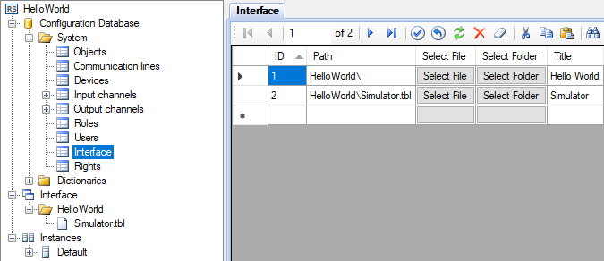
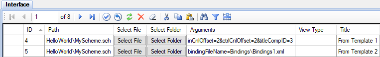

Figure 1. Menu to create a view
View is a form of data representation in the Webstation application. There are 2 types of views supported by default: table views and schemes. Support for other types of views can be added by installing additional plugins.
Table Editor and Scheme Editor are designed to create views. Views are saved to files that must be located in the interface directory of a project. At run time, views are located in the interface directory specified in the Server application settings, or in its subdirectories, by default C:\SCADA\Interface\
Examples of view files:
Interface\Servers\ServerRoom.sch - scheme,
Interface\Servers\ServerRoom.tbl - table view.
To open a dialog for creating a view, select the New file context menu item (see Figure 1 and 2). Then in the dialog form, select the type of view, specify the file name and click the OK button. The created file will be displayed in the project explorer. By double-clicking on the corresponding tree node, the view is opened by the editor.
Figure 1. Menu to create a view

Figure 2. View creation dialog
After view files are created, they must be specified in the Interface table of the configuration database, as shown in Figure 3. View identifiers must be unique. The view path is relative to the interface directory. The text specified in the Title column is displayed as a node text in the explorer tree of Webstation, and identifiers determine the sorting of the views. If view files are located in the subdirectories of the interface directory, these subdirectories must also be specified in the Interface table.

Figure 3. Editing the Interface table
Schemes support the template mode. A template is a regular scheme created using Scheme Editor, which can be bound to arbitrary input and output channels.
To use a scheme in the template mode, specify the appropriate arguments in the Interface table. Two options are available (see Figure 3):

Figure 4. Scheme template in the Interface table
Description of the arguments:
inCnlOffset - input channel number offset;
ctrlCnlOffset - output channel number offset;
titleCompID - title component identifier;
bindingFileName - file name of the bindings relative to the Webstation configuration directory.
The title text of a scheme working in the template mode is taken from the Title field of the Interface table. When creating a scheme template using Scheme Editor, it is recommended to leave the scheme title property blank.
Binding files must be located inside the Webstation configuration directory, by default C:\SCADA\ScadaWeb\config\. Binding file example:
<?xml version="1.0" encoding="utf-8" ?>
<TemplateBindings>
<TemplateFileName>MyScheme.sch</TemplateFileName>
<TitleCompID>3</TitleCompID>
<Binding compID="1" inCnlNum="101" ctrlCnlNum="101" />
<Binding compID="2" inCnlNum="102" />
</TemplateBindings>